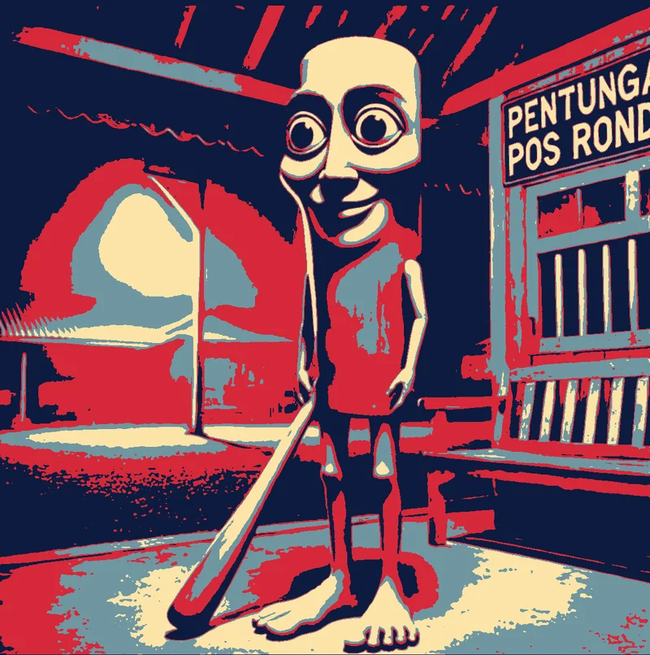
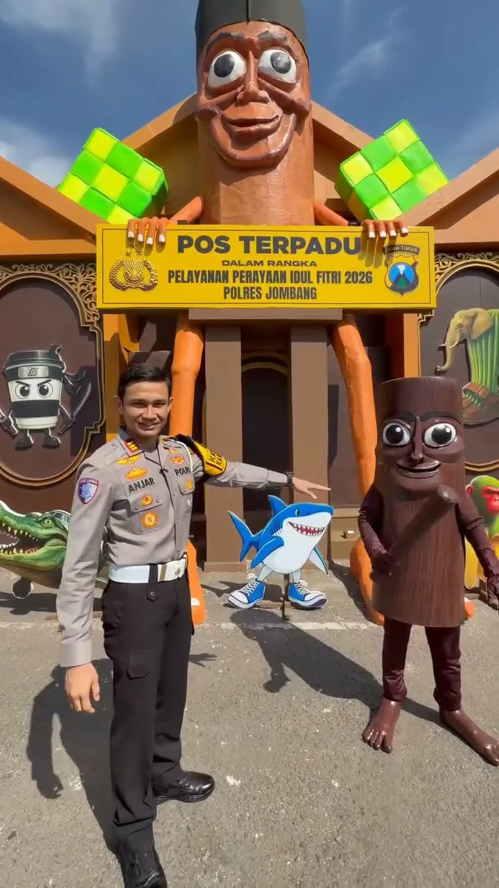

Everyone's doing it.
Millions of kids already say his name every day. 9 out of 10 kentongans agree. The 10th was a cowbell.
Tung94%
Snooze5%
Cowbell1%

★ ★ ★ OFFICIAL CAMPAIGN 2028 ★ ★ ★
“Tung Tung Support Us!”
A log of the people. Carved by the people. Banging on doors for the people.
Nation-wide tungs: 0


me at my 1st job (pos ronda, 3am) 🥲
Campaign tactic #1 · Plain Folks
Hey there. I'm Tung. Just an ordinary piece of wood from an ordinary neighborhood watch post in Indonesia.
I don't come from money. I come from a tree. I worked the night shift my whole life — waking up the neighborhood for sahur, the pre-dawn meal during Ramadan. Tung. Tung. Tung. Every. Single. Night.
I wear no shoes. I own one bat. I eat breakfast at 3 AM like any normal working family.
The career politicians? They've never been hollowed out to make a drum. I have. I know your struggle.
Campaign tactic #2 · The Origin Story
Every great leader has a humble beginning. Ours has a terrifying one.
Tung is an anthropomorphic kentongan — a traditional Indonesian slit drum. During Ramadan, neighborhood patrols bang on them before dawn to wake everyone for sahur. “Tung tung” is literally the sound it makes. He is his own campaign jingle.
One day before Ramadan, Indonesian TikToker Noxa asked an AI to “draw a pentungan sahur with a face and legs.” Then: “a patrol pentungan with a single human leg.” Democracy was never the same.
Though proudly Indonesian, Tung was swept into the “Italian brainrot” universe alongside Tralalero Tralala (a shark in Nikes), Bombardiro Crocodilo (a crocodile bomber plane) and Ballerina Cappuccina. Coalition-building: ✅
Removed from Roblox's Steal a Brainrot after a copyright dispute. Two months later? Added right back. You can't keep a good log down.
Became a Fortnite outfit. Fans voted it one of the worst skins in the game. Campaign response: “The establishment fears me.”

A giant Tung Tung towered over a police holiday service post in Jombang, East Java — with a full-size Tung mascot standing guard. Most candidates get a statue after they win. Tung is ahead of schedule.
Because he came from an AI image, Tung is generally considered ineligible for copyright — making him effectively public domain (though a licensing agency is contesting it). Translation: he doesn't belong to a corporation. He belongs to YOU.
Campaign tactic #3 · Fear Appeal
It's 3:00 AM.
You hear it in the distance…
tung… tung… tung…
You didn't answer the first call.
You didn't answer the second.
Don't miss the third.
VOTE TUNG. Or he votes for you. At your house.
Paid for by the Committee to Wake You Up (CWYU). Not responsible for knocked-over doors.
Campaign tactic #4 · Big Promises
Tap a card to read the fine print.
Nine tungs to start class. Nine tungs for lunch. Detention is a private concert.
The snooze button has had decades of power. What has it given us? Nine more minutes of lies.
Universal sahur for all. The most important meal of the day, served at the most unhinged hour of the day.
For sports. Strictly for sports. Why are you looking at us like that.
Barefoot Fridays nationwide. Tung hasn't worn shoes since 2025 and look at him now.
For the environment. And for… future cabinet members. 👀
Our civics teacher said to use propaganda techniques. So we used all of them.
Millions of kids already say his name every day. 9 out of 10 kentongans agree. The 10th was a cowbell.
What do these words mean together? Doesn't matter. They sound amazing on a banner. 🇺🇸✨🥁
“Tung is the only candidate who wears no shoes. Respect.” — Tralalero Tralala, shark, wears Nikes
“I would bomb… the polls… for this man.” — Bombardiro Crocodilo
“He spins my heart like a pirouette.” — Ballerina Cappuccina
“Brr brr. Patapim.” — Brr Brr Patapim (we think that's a yes)
“Who keeps knocking at 3 AM??” — Your neighbor (undecided)
Snooze Button wants you to stay in bed and miss breakfast. He's been pressed more times than a panini. Can you trust a candidate who literally gives up every 9 minutes?
Tung is the #1 most recognized “brainrot” character among elementary schoolers. Babies kissed: 0. Babies gently tapped awake for breakfast: thousands.
TUNG TUNG TUNG TUNG TUNG TUNG TUNG TUNG TUNG SAHUR.
Studies show you remember things you hear 9 times. That's why his name is 9 times.
We put him next to fireworks, eagles and flags. Now he's patriotic. That's how it works. 🎆🦅
Interactive · Get Out The Vote
Tap the log 9 times to sound the call. Get to SAHUR and the whole neighborhood wakes up to vote.
0 / 9 tungs
Join 48,213 fellow plain folks who have pledged to wake up and vote.
The Committee to Elect Tung Tung Tung Sahur hereby certifies that
—
is an official Tung Tung Supporter and promises to answer the call of sahur on the first try.
~ Tung Tung Tung Sahur ~
(signed with a bat)
TUNG TUNG
SUPPORT US
Vote Tung Tung Tung Sahur · Wake up. Show up. Tung up.